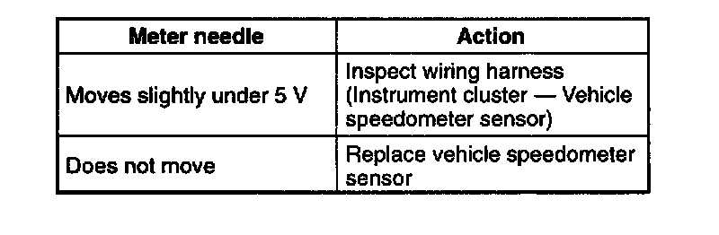
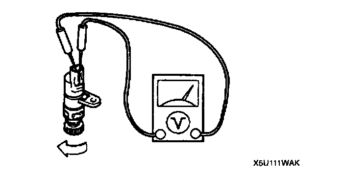

Vehicle Speed Sensor: Testing and Inspection
VEHICLE SPEEDOMETER SENSOR INSPECTION1. Remove the vehicle speedometer sensor.


2. Measure voltage between terminals of the vehicle speedometer sensor while the gear is turning.
3. Install the vehicle speedometer sensor.